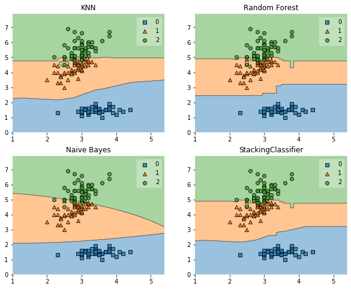

StackingClassifier: Simple stacking
An ensemble-learning meta-classifier for stacking.
from mlxtend.classifier import StackingClassifier
Overview
Stacking is an ensemble learning technique to combine multiple classification models via a meta-classifier. The individual classification models are trained based on the complete training set; then, the meta-classifier is fitted based on the outputs -- meta-features -- of the individual classification models in the ensemble. The meta-classifier can either be trained on the predicted class labels or probabilities from the ensemble.

The algorithm can be summarized as follows (source: [1]):

Please note that this type of Stacking is prone to overfitting due to information leakage. The related StackingCVClassifier.md does not derive the predictions for the 2nd-level classifier from the same datast that was used for training the level-1 classifiers and is recommended instead.
References
- [1] Tang, J., S. Alelyani, and H. Liu. "Data Classification: Algorithms and Applications." Data Mining and Knowledge Discovery Series, CRC Press (2015): pp. 498-500.
- [2] Wolpert, David H. "Stacked generalization." Neural networks 5.2 (1992): 241-259.
Example 1 - Simple Stacked Classification
from sklearn import datasets
iris = datasets.load_iris()
X, y = iris.data[:, 1:3], iris.target
from sklearn import model_selection
from sklearn.linear_model import LogisticRegression
from sklearn.neighbors import KNeighborsClassifier
from sklearn.naive_bayes import GaussianNB
from sklearn.ensemble import RandomForestClassifier
from mlxtend.classifier import StackingClassifier
import numpy as np
import warnings
warnings.simplefilter('ignore')
clf1 = KNeighborsClassifier(n_neighbors=1)
clf2 = RandomForestClassifier(random_state=1)
clf3 = GaussianNB()
lr = LogisticRegression()
sclf = StackingClassifier(classifiers=[clf1, clf2, clf3],
meta_classifier=lr)
print('3-fold cross validation:\n')
for clf, label in zip([clf1, clf2, clf3, sclf],
['KNN',
'Random Forest',
'Naive Bayes',
'StackingClassifier']):
scores = model_selection.cross_val_score(clf, X, y,
cv=3, scoring='accuracy')
print("Accuracy: %0.2f (+/- %0.2f) [%s]"
% (scores.mean(), scores.std(), label))
3-fold cross validation:
Accuracy: 0.91 (+/- 0.01) [KNN]
Accuracy: 0.95 (+/- 0.01) [Random Forest]
Accuracy: 0.91 (+/- 0.02) [Naive Bayes]
Accuracy: 0.95 (+/- 0.02) [StackingClassifier]
import matplotlib.pyplot as plt
from mlxtend.plotting import plot_decision_regions
import matplotlib.gridspec as gridspec
import itertools
gs = gridspec.GridSpec(2, 2)
fig = plt.figure(figsize=(10,8))
for clf, lab, grd in zip([clf1, clf2, clf3, sclf],
['KNN',
'Random Forest',
'Naive Bayes',
'StackingClassifier'],
itertools.product([0, 1], repeat=2)):
clf.fit(X, y)
ax = plt.subplot(gs[grd[0], grd[1]])
fig = plot_decision_regions(X=X, y=y, clf=clf)
plt.title(lab)

Example 2 - Using Probabilities as Meta-Features
Alternatively, the class-probabilities of the first-level classifiers can be used to train the meta-classifier (2nd-level classifier) by setting use_probas=True. If average_probas=True, the probabilities of the level-1 classifiers are averaged, if average_probas=False, the probabilities are stacked (recommended). For example, in a 3-class setting with 2 level-1 classifiers, these classifiers may make the following "probability" predictions for 1 training sample:
- classifier 1: [0.2, 0.5, 0.3]
- classifier 2: [0.3, 0.4, 0.4]
If average_probas=True, the meta-features would be:
- [0.25, 0.45, 0.35]
In contrast, using average_probas=False results in k features where, k = [n_classes * n_classifiers], by stacking these level-1 probabilities:
- [0.2, 0.5, 0.3, 0.3, 0.4, 0.4]
clf1 = KNeighborsClassifier(n_neighbors=1)
clf2 = RandomForestClassifier(random_state=1)
clf3 = GaussianNB()
lr = LogisticRegression()
sclf = StackingClassifier(classifiers=[clf1, clf2, clf3],
use_probas=True,
average_probas=False,
meta_classifier=lr)
print('3-fold cross validation:\n')
for clf, label in zip([clf1, clf2, clf3, sclf],
['KNN',
'Random Forest',
'Naive Bayes',
'StackingClassifier']):
scores = model_selection.cross_val_score(clf, X, y,
cv=3, scoring='accuracy')
print("Accuracy: %0.2f (+/- %0.2f) [%s]"
% (scores.mean(), scores.std(), label))
3-fold cross validation:
Accuracy: 0.91 (+/- 0.01) [KNN]
Accuracy: 0.95 (+/- 0.01) [Random Forest]
Accuracy: 0.91 (+/- 0.02) [Naive Bayes]
Accuracy: 0.92 (+/- 0.02) [StackingClassifier]
Example 3 - Stacked Classification and GridSearch
The stack allows tuning hyper parameters of the base and meta models! A full list of tunable parameters can be obtained via estimator.get_params().keys().
from sklearn.linear_model import LogisticRegression
from sklearn.neighbors import KNeighborsClassifier
from sklearn.naive_bayes import GaussianNB
from sklearn.ensemble import RandomForestClassifier
from sklearn.model_selection import GridSearchCV
from mlxtend.classifier import StackingClassifier
# Initializing models
clf1 = KNeighborsClassifier(n_neighbors=1)
clf2 = RandomForestClassifier(random_state=1)
clf3 = GaussianNB()
lr = LogisticRegression()
sclf = StackingClassifier(classifiers=[clf1, clf2, clf3],
meta_classifier=lr)
params = {'kneighborsclassifier__n_neighbors': [1, 5],
'randomforestclassifier__n_estimators': [10, 50],
'meta_classifier__C': [0.1, 10.0]}
grid = GridSearchCV(estimator=sclf,
param_grid=params,
cv=5,
refit=True)
grid.fit(X, y)
cv_keys = ('mean_test_score', 'std_test_score', 'params')
for r, _ in enumerate(grid.cv_results_['mean_test_score']):
print("%0.3f +/- %0.2f %r"
% (grid.cv_results_[cv_keys[0]][r],
grid.cv_results_[cv_keys[1]][r] / 2.0,
grid.cv_results_[cv_keys[2]][r]))
print('Best parameters: %s' % grid.best_params_)
print('Accuracy: %.2f' % grid.best_score_)
0.933 +/- 0.03 {'kneighborsclassifier__n_neighbors': 1, 'meta_classifier__C': 0.1, 'randomforestclassifier__n_estimators': 10}
0.940 +/- 0.02 {'kneighborsclassifier__n_neighbors': 1, 'meta_classifier__C': 0.1, 'randomforestclassifier__n_estimators': 50}
0.927 +/- 0.03 {'kneighborsclassifier__n_neighbors': 1, 'meta_classifier__C': 10.0, 'randomforestclassifier__n_estimators': 10}
0.947 +/- 0.02 {'kneighborsclassifier__n_neighbors': 1, 'meta_classifier__C': 10.0, 'randomforestclassifier__n_estimators': 50}
0.947 +/- 0.02 {'kneighborsclassifier__n_neighbors': 5, 'meta_classifier__C': 0.1, 'randomforestclassifier__n_estimators': 10}
0.947 +/- 0.02 {'kneighborsclassifier__n_neighbors': 5, 'meta_classifier__C': 0.1, 'randomforestclassifier__n_estimators': 50}
0.933 +/- 0.02 {'kneighborsclassifier__n_neighbors': 5, 'meta_classifier__C': 10.0, 'randomforestclassifier__n_estimators': 10}
0.940 +/- 0.02 {'kneighborsclassifier__n_neighbors': 5, 'meta_classifier__C': 10.0, 'randomforestclassifier__n_estimators': 50}
Best parameters: {'kneighborsclassifier__n_neighbors': 1, 'meta_classifier__C': 10.0, 'randomforestclassifier__n_estimators': 50}
Accuracy: 0.95
In case we are planning to use a regression algorithm multiple times, all we need to do is to add an additional number suffix in the parameter grid as shown below:
from sklearn.model_selection import GridSearchCV
# Initializing models
clf1 = KNeighborsClassifier(n_neighbors=1)
clf2 = RandomForestClassifier(random_state=1)
clf3 = GaussianNB()
lr = LogisticRegression()
sclf = StackingClassifier(classifiers=[clf1, clf1, clf2, clf3],
meta_classifier=lr)
params = {'kneighborsclassifier-1__n_neighbors': [1, 5],
'kneighborsclassifier-2__n_neighbors': [1, 5],
'randomforestclassifier__n_estimators': [10, 50],
'meta_classifier__C': [0.1, 10.0]}
grid = GridSearchCV(estimator=sclf,
param_grid=params,
cv=5,
refit=True)
grid.fit(X, y)
cv_keys = ('mean_test_score', 'std_test_score', 'params')
for r, _ in enumerate(grid.cv_results_['mean_test_score']):
print("%0.3f +/- %0.2f %r"
% (grid.cv_results_[cv_keys[0]][r],
grid.cv_results_[cv_keys[1]][r] / 2.0,
grid.cv_results_[cv_keys[2]][r]))
print('Best parameters: %s' % grid.best_params_)
print('Accuracy: %.2f' % grid.best_score_)
0.933 +/- 0.03 {'kneighborsclassifier-1__n_neighbors': 1, 'kneighborsclassifier-2__n_neighbors': 1, 'meta_classifier__C': 0.1, 'randomforestclassifier__n_estimators': 10}
0.940 +/- 0.02 {'kneighborsclassifier-1__n_neighbors': 1, 'kneighborsclassifier-2__n_neighbors': 1, 'meta_classifier__C': 0.1, 'randomforestclassifier__n_estimators': 50}
0.927 +/- 0.03 {'kneighborsclassifier-1__n_neighbors': 1, 'kneighborsclassifier-2__n_neighbors': 1, 'meta_classifier__C': 10.0, 'randomforestclassifier__n_estimators': 10}
0.947 +/- 0.02 {'kneighborsclassifier-1__n_neighbors': 1, 'kneighborsclassifier-2__n_neighbors': 1, 'meta_classifier__C': 10.0, 'randomforestclassifier__n_estimators': 50}
0.940 +/- 0.02 {'kneighborsclassifier-1__n_neighbors': 1, 'kneighborsclassifier-2__n_neighbors': 5, 'meta_classifier__C': 0.1, 'randomforestclassifier__n_estimators': 10}
0.947 +/- 0.02 {'kneighborsclassifier-1__n_neighbors': 1, 'kneighborsclassifier-2__n_neighbors': 5, 'meta_classifier__C': 0.1, 'randomforestclassifier__n_estimators': 50}
0.933 +/- 0.03 {'kneighborsclassifier-1__n_neighbors': 1, 'kneighborsclassifier-2__n_neighbors': 5, 'meta_classifier__C': 10.0, 'randomforestclassifier__n_estimators': 10}
0.953 +/- 0.02 {'kneighborsclassifier-1__n_neighbors': 1, 'kneighborsclassifier-2__n_neighbors': 5, 'meta_classifier__C': 10.0, 'randomforestclassifier__n_estimators': 50}
0.940 +/- 0.02 {'kneighborsclassifier-1__n_neighbors': 5, 'kneighborsclassifier-2__n_neighbors': 1, 'meta_classifier__C': 0.1, 'randomforestclassifier__n_estimators': 10}
0.947 +/- 0.02 {'kneighborsclassifier-1__n_neighbors': 5, 'kneighborsclassifier-2__n_neighbors': 1, 'meta_classifier__C': 0.1, 'randomforestclassifier__n_estimators': 50}
0.933 +/- 0.03 {'kneighborsclassifier-1__n_neighbors': 5, 'kneighborsclassifier-2__n_neighbors': 1, 'meta_classifier__C': 10.0, 'randomforestclassifier__n_estimators': 10}
0.953 +/- 0.02 {'kneighborsclassifier-1__n_neighbors': 5, 'kneighborsclassifier-2__n_neighbors': 1, 'meta_classifier__C': 10.0, 'randomforestclassifier__n_estimators': 50}
0.953 +/- 0.02 {'kneighborsclassifier-1__n_neighbors': 5, 'kneighborsclassifier-2__n_neighbors': 5, 'meta_classifier__C': 0.1, 'randomforestclassifier__n_estimators': 10}
0.953 +/- 0.02 {'kneighborsclassifier-1__n_neighbors': 5, 'kneighborsclassifier-2__n_neighbors': 5, 'meta_classifier__C': 0.1, 'randomforestclassifier__n_estimators': 50}
0.933 +/- 0.02 {'kneighborsclassifier-1__n_neighbors': 5, 'kneighborsclassifier-2__n_neighbors': 5, 'meta_classifier__C': 10.0, 'randomforestclassifier__n_estimators': 10}
0.940 +/- 0.02 {'kneighborsclassifier-1__n_neighbors': 5, 'kneighborsclassifier-2__n_neighbors': 5, 'meta_classifier__C': 10.0, 'randomforestclassifier__n_estimators': 50}
Best parameters: {'kneighborsclassifier-1__n_neighbors': 1, 'kneighborsclassifier-2__n_neighbors': 5, 'meta_classifier__C': 10.0, 'randomforestclassifier__n_estimators': 50}
Accuracy: 0.95
Note
The StackingClassifier also enables grid search over the classifiers argument. When there are level-mixed hyperparameters, GridSearchCV will try to replace hyperparameters in a top-down order, i.e., classifers -> single base classifier -> classifier hyperparameter. For instance, given a hyperparameter grid such as
params = {'randomforestclassifier__n_estimators': [1, 100],
'classifiers': [(clf1, clf1, clf1), (clf2, clf3)]}
it will first use the instance settings of either (clf1, clf1, clf1) or (clf2, clf3). Then it will replace the 'n_estimators' settings for a matching classifier based on 'randomforestclassifier__n_estimators': [1, 100].
Example 4 - Stacking of Classifiers that Operate on Different Feature Subsets
The different level-1 classifiers can be fit to different subsets of features in the training dataset. The following example illustrates how this can be done on a technical level using scikit-learn pipelines and the ColumnSelector:
from sklearn.datasets import load_iris
from mlxtend.classifier import StackingClassifier
from mlxtend.feature_selection import ColumnSelector
from sklearn.pipeline import make_pipeline
from sklearn.linear_model import LogisticRegression
iris = load_iris()
X = iris.data
y = iris.target
pipe1 = make_pipeline(ColumnSelector(cols=(0, 2)),
LogisticRegression())
pipe2 = make_pipeline(ColumnSelector(cols=(1, 2, 3)),
LogisticRegression())
sclf = StackingClassifier(classifiers=[pipe1, pipe2],
meta_classifier=LogisticRegression())
sclf.fit(X, y)
StackingClassifier(average_probas=False,
classifiers=[Pipeline(memory=None,
steps=[('columnselector',
ColumnSelector(cols=(0, 2),
drop_axis=False)),
('logisticregression',
LogisticRegression(C=1.0,
class_weight=None,
dual=False,
fit_intercept=True,
intercept_scaling=1,
l1_ratio=None,
max_iter=100,
multi_class='auto',
n_jobs=None,
penalty='l2',
random_state=None,
sol...
meta_classifier=LogisticRegression(C=1.0, class_weight=None,
dual=False,
fit_intercept=True,
intercept_scaling=1,
l1_ratio=None,
max_iter=100,
multi_class='auto',
n_jobs=None, penalty='l2',
random_state=None,
solver='lbfgs',
tol=0.0001, verbose=0,
warm_start=False),
store_train_meta_features=False, use_clones=True,
use_features_in_secondary=False, use_probas=False,
verbose=0)
Example 5 - Using Pre-fitted Classifiers
Assume that we previously fitted our classifiers:
from sklearn import model_selection
from sklearn.linear_model import LogisticRegression
from sklearn.naive_bayes import GaussianNB
from sklearn.ensemble import RandomForestClassifier
import numpy as np
clf1 = KNeighborsClassifier(n_neighbors=1)
clf2 = RandomForestClassifier(random_state=1)
clf3 = GaussianNB()
lr = LogisticRegression()
for clf in (clf1, clf2, clf3):
clf.fit(X, y)
By setting fit_base_estimators=False, it will enforce use_clones to be False and the StackingClassifier will not re-fit these classifers to save computational time:
from mlxtend.classifier import StackingClassifier
import copy
sclf = StackingClassifier(classifiers=[clf1, clf2, clf3],
meta_classifier=lr, fit_base_estimators=False)
labels = ['KNN', 'Random Forest', 'Naive Bayes', 'StackingClassifier']
sclf.fit(X, y)
print('accuracy:', np.mean(y == sclf.predict(X)))
Warning: enforce use_clones to be False
accuracy: 1.0
However, please note that fit_base_estimators=False is incompatible to any form of cross-validation that is done in e.g., model_selection.cross_val_score or model_selection.GridSearchCV, etc., since it would require the classifiers to be refit to the training folds. Thus, only use fit_base_estimators=False if you want to make a prediction directly without cross-validation.
Example 6 -- ROC Curve with decision_function
Like other scikit-learn classifiers, the StackingCVClassifier has an decision_function method that can be used for plotting ROC curves. Note that the decision_function expects and requires the meta-classifier to implement a decision_function.
from sklearn import model_selection
from sklearn.linear_model import LogisticRegression
from sklearn.neighbors import KNeighborsClassifier
from sklearn.svm import SVC
from sklearn.ensemble import RandomForestClassifier
from mlxtend.classifier import StackingCVClassifier
from sklearn.metrics import roc_curve, auc
import numpy as np
from sklearn.model_selection import train_test_split
from sklearn import datasets
from sklearn.preprocessing import label_binarize
from sklearn.multiclass import OneVsRestClassifier
iris = datasets.load_iris()
X, y = iris.data[:, [0, 1]], iris.target
# Binarize the output
y = label_binarize(y, classes=[0, 1, 2])
n_classes = y.shape[1]
RANDOM_SEED = 42
X_train, X_test, y_train, y_test = train_test_split(
X, y, test_size=0.33, random_state=RANDOM_SEED)
clf1 = LogisticRegression()
clf2 = RandomForestClassifier(random_state=RANDOM_SEED)
clf3 = SVC(random_state=RANDOM_SEED)
lr = LogisticRegression()
sclf = StackingClassifier(classifiers=[clf1, clf2, clf3],
meta_classifier=lr)
# Learn to predict each class against the other
classifier = OneVsRestClassifier(sclf)
Using predict_proba()
y_score = classifier.fit(X_train, y_train).predict_proba(X_test)
# Compute ROC curve and ROC area for each class
fpr = dict()
tpr = dict()
roc_auc = dict()
for i in range(n_classes):
fpr[i], tpr[i], _ = roc_curve(y_test[:, i], y_score[:, i])
roc_auc[i] = auc(fpr[i], tpr[i])
# Compute micro-average ROC curve and ROC area
fpr["micro"], tpr["micro"], _ = roc_curve(y_test.ravel(), y_score.ravel())
roc_auc["micro"] = auc(fpr["micro"], tpr["micro"])
plt.figure()
lw = 2
plt.plot(fpr[2], tpr[2], color='darkorange',
lw=lw, label='ROC curve (area = %0.2f)' % roc_auc[2])
plt.plot([0, 1], [0, 1], color='navy', lw=lw, linestyle='--')
plt.xlim([0.0, 1.0])
plt.ylim([0.0, 1.05])
plt.xlabel('False Positive Rate')
plt.ylabel('True Positive Rate')
plt.title('Receiver operating characteristic example')
plt.legend(loc="lower right")
plt.show()

Using decision_function()
y_score = classifier.fit(X_train, y_train).decision_function(X_test)
# Compute ROC curve and ROC area for each class
fpr = dict()
tpr = dict()
roc_auc = dict()
for i in range(n_classes):
fpr[i], tpr[i], _ = roc_curve(y_test[:, i], y_score[:, i])
roc_auc[i] = auc(fpr[i], tpr[i])
# Compute micro-average ROC curve and ROC area
fpr["micro"], tpr["micro"], _ = roc_curve(y_test.ravel(), y_score.ravel())
roc_auc["micro"] = auc(fpr["micro"], tpr["micro"])
plt.figure()
lw = 2
plt.plot(fpr[2], tpr[2], color='darkorange',
lw=lw, label='ROC curve (area = %0.2f)' % roc_auc[2])
plt.plot([0, 1], [0, 1], color='navy', lw=lw, linestyle='--')
plt.xlim([0.0, 1.0])
plt.ylim([0.0, 1.05])
plt.xlabel('False Positive Rate')
plt.ylabel('True Positive Rate')
plt.title('Receiver operating characteristic example')
plt.legend(loc="lower right")
plt.show()